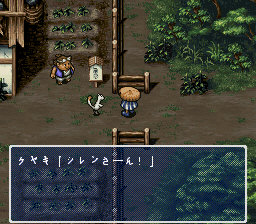
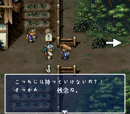
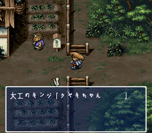

|
|
| 小榉：「西林哥……」 |
小榉：「给你这个……」 |
|
|
| 西林接过龙炎草。 |
小榉：「嗯……当你说要走又回到村庄的时候……我……」 |
|
|
| 小榉：「我……我真的很开心……」 |
小榉红着脸跑了……
孩子们：「嘻嘻嘻嘻嘻……好亲热啊！」 |
|
|
| 科帕：「去！不要嘲笑人……大人说话小孩不许插嘴！西林，起程吧！」 |
木匠：「西林是不是因为小榉而回到月影村的呢？」
西林：「又问一遍，你烦不烦啊？」 |
|
 |
木匠：「那么，小榉为什么还不明白这点呢……」
西林：「……」 |
小榉：「西林哥……」
木匠：「哥？嘻嘻……」 |
|
 |
| 小榉：「给，这是识别的腕轮，一定对你很有帮助的。」 |
西林：「这个迷宫不能带道具的呀。」
小榉：「不能带道具？这样子啊……真是遗憾……我还是留着自己戴好了。」
西林：（我想要啊，可以放在仓库里作装饰品嘛） |
|
 |
| 小榉：「我帮不上你什么忙了……加油啊！」 |
木匠：「小榉为什么不对西林直接说‘我爱你’呢？西林也真是的，小榉是女孩子，西林你应该先说的嘛！」
小榉：「有你个电灯泡在这里人家怎么说得出口嘛？」 |